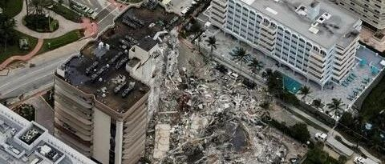

转载 | 从中美澳三国设计规范角度讨论佛罗里达州倒塌建筑的设计缺陷
以下文章来源于关红课题组 ，作者焦梓洋 薛慧中
澳大利亚格里菲斯大学关红教授课题组
声明
1 背景

本文通过还原事故结构的原有设计参数与构造方法，以现行中美澳三国设计规范[1-3]为基础，在关红教授和北京工业大学李易教授的指导下对事故大楼的结构构造进行初步的分析，探讨事故大楼可能存在的一些缺陷。主要涉及到的规范条款详见附录。分析时选取典型层（9层）的典型节点（轴线8与轴线L交点对应节点），具体图纸详见图2。原有基本设计参数为：28天混凝土圆柱体抗压强度标准值为3000 psi（21MPa），板厚为8英寸（203.2mm），板底钢筋为#4（0.5英寸，12.7mm），板顶钢筋为#5（0.625英寸，15.88mm），柱截面尺寸为14×18英寸（355.6mm×457.2mm），保护层厚度取3/4英寸（19.05mm）。

2 结构的跨厚比
3 楼板钢筋的构造

4 节点的抗冲剪承载力

如果按照荷载组合来看，事故结构在基于现行中美澳三国规范下的理论抗冲剪承载力均低于其所受的冲剪荷载，如果按照荷载设计的标准值（不考虑组合系数）来看，用中国规范验算仍然不满足，用美澳规范验算虽然满足但是从结果上看安全储备很低，结构的安全性存疑。
5 节点加强措施

6 结论
1）在跨厚比方面，事故结构不满足中国规范，满足美国规范与澳洲规范。
2）在楼板钢筋构造方面，事故大楼的典型节点的穿柱整体性钢筋数量不足，不满足三国现行的规范，钢筋搭接长度满足美国规范但不符合中国与澳洲的标准。
3）如考虑荷载组合，事故结构在基于现行中美澳三国规范下的理论抗冲剪承载力均低于其所受的冲剪荷载；如不考虑荷载组合，用中国规范验算仍然不满足，虽满足美澳规范但是安全储备低。
4）在现行规范下，事故大楼的典型节点的理论抗冲剪承载力均低于其所受的冲剪荷载，节点位置理应增设加强结构。然而，事故结构的节点无任何规范所推荐的加强措施。
附录：中美澳三国规范对平板结构构造要求的规定对比
GB50010-2015 | ACI318-19 | AS3600-2018 | |
1 有关受弯钢筋最低配筋率的规定
| Clause 8.5.1 板类受弯构件（不包括悬臂板）的受弯钢筋，当采用强度等级400MPa、500MPa 的钢筋时，其最小配筋百分率应允许采用0.15% 或
中的较大值。
| Clause 8.6.1.1 规范对负筋(Flexural reinforcement)做出了规定，规定最小配筋率为0.18%。 | Clause 9.1.1 通过公式计算得知：
|
2 有关负筋上在柱头区域内的数量分配的规定 | Clause 9.1.8 规范规定在温度、收缩应力较大的现浇板区域，应在板的表面双向配置防裂构造钢筋。配筋率均不宜小于 0.10%，间距不宜大于200mm。 在第五条节点增强措施和抗震的规定亦有涉及。 | Clause 8.6.1.2 钢筋数量与关键截面剪应力有关。 当
时，应集中在板有效宽度(Clause 8.7.4.2.3基于不同类型板有不同的有效宽度)内布置一定数量的钢筋，数量为：
| Clause 9.1.2 至少25%计算所需负筋应分布在柱头区域内。柱头区域是指以柱为中心的柱宽加两倍板厚距离的范围。 |
3 有关整体性钢筋（Integrity Reinforcement）的规定
| Clause 11.9.6 沿两个主轴方向贯通节点柱截面的连续预应力筋及板底纵向普通钢筋，数量应该满足：
| Clause 8.7.4.2.2 规范规定穿柱的整体性钢筋数量至少为两根，且整体性钢筋应在内柱处连续在边柱处完全锚固。
| Clause 9.2.1 规范规定穿柱的整体性钢筋数量至少为两根，且整体性钢筋应在内柱处连续，在边柱处完全锚固。 Clause 9.2.2 规定整体性钢筋最低配筋率可通过公式计算得知：
|
4 有关钢筋布置间距的规定
| Clause 9.1.3 规定板中受力钢筋的间距，当板厚不大于150mm时不宜大于200mm；当板厚大于150mm时不宜大于板厚的1.5倍，且不宜大于250mm。
| Clause 25.2.1 对于单层钢筋排布最小的间距不应大于25.4mm，钢筋直径，最大骨料直径三者中较小的数值，多层排布钢筋上下间距最小为25.4mm。 Clause 8.7.2 在关键截面内，最大间距为2倍板厚与457.2mm中较小数值，其余地方为3倍板厚与457.2mm较小数值。
| Clause 9.2.4 规范对于最小间距没有明确规定，但是最小间距的取值不应该影响正常的施工。对于一般楼板来说每个方向的钢筋中心与中心之间的间距不得超过2倍板厚或300 mm中较小的数值。此规定不考虑直径小于最大钢筋直径一半的钢筋。 |
5 有关节点增强措施和抗震的规定
| Clause 9.1.12与Clause 11.9.2 规范说明可以使用有托板或柱帽的板柱节点。同时此类结构也被推荐于抗震设计中。 规范说明在8度设防烈度时宜采用有托板或柱帽的板柱节点。无帽平板宜在柱上板带中设构造暗梁。规范同时对托板，柱帽，暗梁的尺寸，箍筋等进行说明。暗梁宽度可取柱宽加柱两侧各不大于1.5倍板厚。暗梁支座上部纵向钢筋应不小于柱上板带纵向钢筋截面面积的1/2，暗梁下部纵向钢筋不宜少于上部纵向钢筋截面面积的1/2。暗梁箍筋直径不应小8mm，间距不宜大于3/4倍板厚，肢距不宜大于2倍板厚；支座处暗梁箍筋加密区长度不应小于3倍板厚，其箍筋间距不宜大于100mm ，肢距不宜大于250mm。条文也有对沿两个主轴方向贯通节点柱截面的连续预应力筋及板底纵向普通钢筋布置的规定。 | Clause 8.2.4与Clause 8.2.5 规范中提出可用托板（Drop panel）和柱帽（Shear cap）增强板的节点并对托板柱帽的尺寸进行了规定。 Clause 8.7.6 规范说明了两种抗剪钢筋，分别是箍筋(Stirrup)锚栓(Headed studs)并对其尺寸、位置、间距等进行了说明。 Clause 18.4.5 在抗震设计中，规范并没有针对抗剪钢筋进行规定，亦没有指定相关加强措施，条文大多关于板内纵向钢筋在柱上板带的数量，分布方法等。 | Clause 9.3.6 规范规定可设置抗剪钢筋以形成类似于暗梁的结构Torsion strip和边梁(Spandrel beam)增强节点，规范对两种结构中所用箍筋的数量间距等做出了规定。同时托板结构或柱帽结构(Drop panel or Column capital) 也在规范中被提及用以增强节点。 Clause 14.5.3 在抗震设计中，规范并没有针对抗剪钢筋进行规定，亦没有指定相关加强措施，条文大多关于板内纵向钢筋在柱上板带的数量，分布方法等。 |
6板的跨厚比(Span-to-Depth Ratio)规定
| Clause 9.1.2 板的跨厚比：钢筋混凝土双向板不大于40；无梁支承的有柱帽板不大于35，无支承的无柱帽板不大于30。预应力板可适当增加，当板的荷载、跨度较大时宜适当减小。对于无梁楼板来说最小厚度为150mm。 | Clause 8.3.3.1 规范通过表格列出了在不同情况（位置，混凝土强度，有无托板，有无边梁）下板的最小跨厚比。
| Clause 9.4.4.1 通过公式计算确定：
板最小厚度应经多方位考虑，例如防火等因素。 |
7 钢筋构造规定 | Clause 8.7.4.2.1 规范规定了在柱上板带和跨中板带所使用不同类型的钢筋的长度，以及所占总量的百分比。板顶钢筋为柱头处向外延伸类型，板底钢筋存在柱头处搭接与柱头处不连续两种类型。在柱上板带中所有需要连接的钢筋应该使用机械套筒或焊接的连接方法，也可用搭接方法，搭接长度为150mm。 | Clause 8.4.1 规范规定了在柱上板带和跨中板带所使用不同类型的钢筋的长度，以及所占总量的百分比。板顶钢筋为柱头处向外延伸类型，板底钢筋存在柱头处搭接与柱头处不连续两种类型。规范规定钢筋连接可采用绑扎搭接、机械连接或焊接。规范同时对搭接长度进行了规定。 | Clause 9.1.3.4 规范规定了在柱上板带和跨中板带所使用不同类型的钢筋的长度，以及所占总量的百分比。板顶钢筋为柱头处向外延伸类型，板底钢筋存在柱头处连接与柱头处不连续两种类型。连接方法为搭接，需要搭接的钢筋的搭接长度在Clause13.1.2.2中有规定。 |


参考文献
[1] 中华人民共和国国家标准.GB50010－2010 混凝土结构设计规范[S]. 北京: 中国建筑工业出版社, 2010.
[2]ACI (AmericanConcrete Institute).2019. Building coderequirements for structural concrete and commentary. ACI 318M-19. FarmintonHills, MI: ACI.
[3] AS (AustralianStandard). 2018.Concrete structures.AS 3600. Sydney, Australia: AS.
[4] Xue, H., Gilbert, B.P., Guan, H., Lu, X., Li, Y., Ma, F., & Tian, Y. (2018). Load transfer andcollapse resistance of RC flat plates under interior column removalscenario. Journal of Structural Engineering, 144(7),04018087.https://doi.org/10.1061/(ASCE)ST.1943-541X.0002090
[5] Ma, F., Gilbert, B. P., Guan, H., Xue, H.,Lu, X., & Li, Y. (2019). Experimental study on the progressive collapsebehaviour of RC flat plate substructures subjected to corner column removalscenarios. Engineering Structures, 180, 728-741.https://doi.org/10.1016/j.engstruct.2018.11.043
[6] Ma, F., Gilbert,B. P., Guan, H., Lu, X., & Li, Y. (2020). Experimental study on the progressivecollapse behaviour of RC flat plate substructures subjected to edge-column andedge-interior-column removal scenarios. Engineering Structures, 209,110299.https://doi.org/10.1016/J.ENGSTRUCT.2020.110299
[7] Diao, M., Li,Y., Guan, H., Lu, X., Xue, H., & Hao, Z. (2021). Post-punching mechanismsof slab–column joints under upward and downward punching actions. Magazineof Concrete Research, 73(6), 302-314. https://doi.org/10.1680/jmacr.19.00217
---End---
相关研究
专著
人工智能与机器学习
城市灾害模拟与韧性城市
高性能结构与防倒塌
新论文：抗震&防连续倒塌：一种新型构造措施
长按识别二维码，关注我们的科研动态